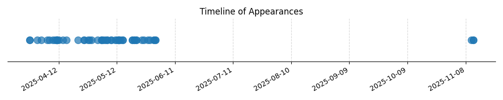

Kategorie: Meteorologie
Cirokumulus (Cc) a cirostratus (Cs) jsou druhy vysokého oblačnosti, které se skládají převážně z ledových krystalů, a proto jsou klasifikovány jako krystalické oblačnosti. Nimbostratus (Ns) a altostratus (As) jsou střední oblačnosti, které mohou obsahovat vodní kapky i ledové krystaly. Cumulonimbus (Cb) je oblak vertikálního vývoje, který ve své horní části obsahuje ledové krystaly, ale jeho spodní a střední části mohou obsahovat i vodní kapky.

| Datum výskytu |
|---|
| 2025-11-12 |
| 2025-11-11 |
| 2025-06-01 |
| 2025-05-31 |
| 2025-05-29 |
| 2025-05-28 |
| 2025-05-26 |
| 2025-05-25 |
| 2025-05-22 |
| 2025-05-21 |
| 2025-05-20 |
| 2025-05-15 |
| 2025-05-14 |
| 2025-05-13 |
| 2025-05-12 |
| 2025-05-11 |
| 2025-05-09 |
| 2025-05-07 |
| 2025-05-06 |
| 2025-05-05 |
| 2025-05-04 |
| 2025-05-02 |
| 2025-04-29 |
| 2025-04-28 |
| 2025-04-27 |
| 2025-04-25 |
| 2025-04-22 |
| 2025-04-16 |
| 2025-04-14 |
| 2025-04-12 |
| 2025-04-11 |
| 2025-04-10 |
| 2025-04-09 |
| 2025-04-07 |
| 2025-04-06 |
| 2025-04-03 |
| 2025-04-01 |
| 2025-03-28 |